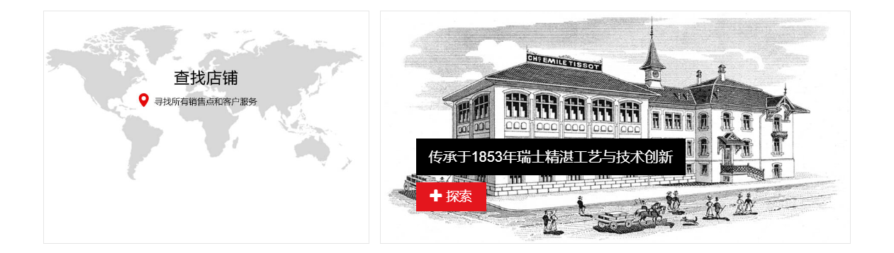

<footer>
	<div class="map">
		
	</div>
	<div class="footer-list">
		<dl>
			<dt>系列</dt>
			<dd><a href="javascript:;">经典系列</a></dd>
			<dd><a href="javascript:;">时尚系列</a></dd>
			<dd><a href="javascript:;">触屏系列</a></dd>
			<dd><a href="javascript:;">运动系列</a></dd>
		</dl>
		<dl>
			<dt>相关条款</dt>
			<dd><a href="javascript:;">使用条款</a></dd>
			<dd><a href="javascript:;">销售条件</a></dd>
			<dd><a href="javascript:;">发货退货</a></dd>
		</dl>
		<dl>
			<dt>客户服务</dt>
			<dd><a href="javascript:;">腕表保养</a></dd>
			<dd><a href="javascript:;">质保与用户手册</a></dd>
			<dd><a href="javascript:;">常见问题</a></dd>
		</dl>
		<dl>
			<dt>在线商城帮助</dt>
			<dd><i class="iconfont icon-duihua"></i>Live800 在线销售咨询</dd>
			<dd>
				<i class="iconfont icon-shouji"></i>线下实体店售后热线：
				<p>400-670-1853</p>
			</dd>
			<dd></dd>
		</dl>
		<dl>
			<dt>关注我们</dt>
			<dd><i class="iconfont icon-weixin"></i><i class="iconfont icon-weibo1"></i></dd>
			<dt>售后服务</dt>
			<dd><i class="iconfont icon-weixin"></i></dd>
		</dl>
	</div>
	
	<div class="footer-img">
		<br>
		
		<ul>
			<li>瑞士制造</li>
			<li>官方保修</li>
			<li>轻松退换</li>
			<li>信息安全</li>
		</ul>
	</div>
	
	<h2>© 2016 TISSOT, SWISS WATCHES SINCE 1853. ALL RIGHTS RESERVED.</h2>
	
</footer>